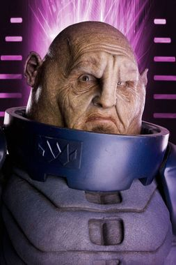

Doctor Who Universe
Crée par un fan pour les fans !
Crée par un fan pour les fans !
Bienvenue sur la page concernant les Sontariens :

Les Sontariens sont une race d'extraterrestres agressifs venant de la planète Sontar. Ils mesurent en moyenne 1,60m et ont une tête en forme de patate cuite. Très belliqueux, ils sont de tous les conflits et leur cri de guerre est "Sontar-Ha ! Sontar-Ha !". Comme les Daleks, l'une de leurs idées fixes est de tuer le Docteur : « Le dernier des Seigneurs du Temps va mourir de la main de l’Empire sontarien dans les ruines de sa précieuse Terre ». Leur point faible est un petit tuyau derrière leur cou qu'il faut viser.
Ils sont vus pour la première fois dans un épisode de la onzième saison de la série originale, « The Time Warrior » (1973), au travers du personnage de Linx, un Sontarien tentant de réparer son vaisseau tombé en plein Moyen Âge. On apprend que les Sontariens sont une race guerrière en perpétuel guerre contre les Rutans, qu'ils sont élevés et clonés en batterie, qu'ils ont un instinct guerrier et une fierté poussée à l'extrême. Ainsi, Linx construit des armes pour le bandit Irongron et éprouve du plaisir à voir les guerres humaines. Il sera tué par une flèche dans le dos à la base du cou, leur seule faiblesse.
On revoit un sontarien à la saison suivante dans « The Sontaran Experiment » (1975) avec le Major Styre. Celui-ci se sert de la Terre, redevenue sauvage comme d'un laboratoire pour tester les faiblesses des terriens en vue d'une attaque de leur colonie. Ayant attiré des astronautes pensant à un signal de détresse, il expérimentera différentes tortures avant de se faire abattre par le Docteur, qui retardera ainsi la guerre entre les sontariens et les terriens.
Dans « The Invasion of Time » (1978), les Sontariens reviennent à la fin de la quatrième partie, s'étant servis d'une attaque de la race des vardans afin d'envahir la planète des seigneurs du temps, Gallifrey. Leur chef, le commandant Stor tentera de détruire l'œil d'harmonie, un artefact puissant fondateur de la race des seigneurs du temps. Il en sera empêché par le Docteur qui réussira avec un fusil à dématérialisation à faire disparaître la menace du temps lui-même.
Dans « The Two Doctors » (1985), les Sontariens capturent le deuxième Docteur avec la complicité d'une femelle Androgum. Le sixième Docteur vient le libérer.
Dans le quatrième épisode de la quatrième saison de la nouvelle série, le Docteur fait face au stratagème sontarien : leur but est faire de la Terre une sorte de laboratoire de clonage. Ils veulent se multiplier pour avoir plus de soldats. Pour cela, ils manipulent un jeune génie en lui faisant croire qu’il aura une planète. Quand cette espèce guerrière apprend que le Docteur est sur Terre pour aider les humains, on apprend que les Sontariens sont vexés de ne pas avoir été invités à la plus grande des guerres : la guerre du Temps. Le Docteur est donc leur ennemi. Mis à part Strax, un guerrier sontarien apparaissant dans le sixième épisode de la saison 7 (La Dame de glace) qui mène des enquètes dans le Londres du XIXe siècle avec Mme Vastra et Jenny.